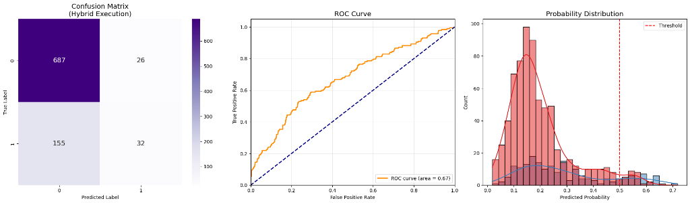

Baseline (Unweighted)
The "Accuracy Paradox"
High accuracy driven by ignoring defaults. The model collapses to predicting the majority class.
Accuracy
80.0%
Class 1 Recall
17.0%
Ours (Weighted MSE)

Business-Aligned Model
Sacrifices raw accuracy to actually detect risk. 4x improvement in identifying defaulters.
Accuracy
71.5%
Class 1 Recall
69.0%